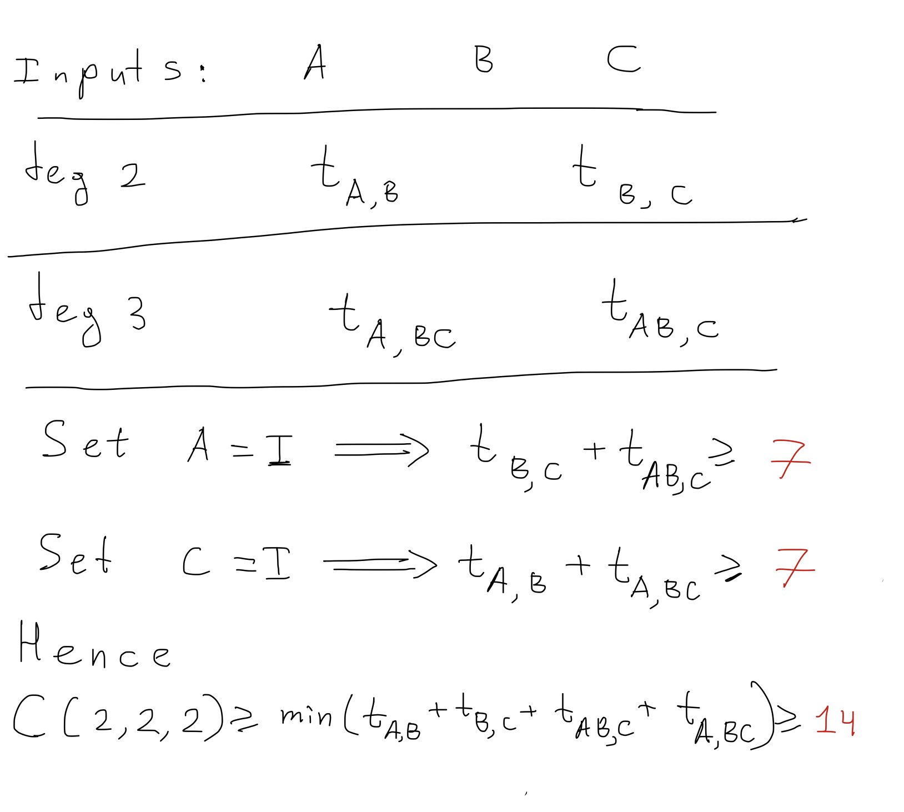

Using GPT-5 to prove new theorems on matrix multiplicationThis year i asked myself a question:
"What is the fastest way to multiply a collection of matrices $A_1, A_2, A_3, ..., A_k$?"
To put it into numbers, let's denote by $C(n, n, ... , n)$ the minimal number of multiplications needed to compute the product of $k$ matrices of size $n \times n$. Surprisingly there is no literature even on multiplication of 3 matrices, so nothing about $C(n, n, n)$ is known. After spending a few days, I got a satisfying answer. But only with help of LLMs (o3 and GPT5). Warmup: Multiplication of two matricesIf we have two matrices $A$ and $B$ $$A = \begin{pmatrix} a_{1} & a_{2} \\ a_{3} & a_{4} \end{pmatrix} \qquad B = \begin{pmatrix} b_{1} & b_{2} \\ b_{3} & b_{4} \end{pmatrix}$$The usual way to multiply them is to compute each of the 4 entries with formulas: $$A \cdot B = \begin{pmatrix} a_{1}b_{1} + a_{2}b_{3} & a_{1}b_{2} + a_{2}b_{4} \\ a_{3}b_{1} + a_{4}b_{3} & a_{3}b_{2} + a_{4}b_{4} \end{pmatrix}$$This way we need 8 multiplications and 4 additions. This should've been the end of the story. But in 1969, Volker Strassen discovered that 7 multiplications is possible: $$\begin{aligned} M_1 &= (a_1 + a_4) (b_1 + b_4) \\ M_2 &= (a_3 + a_4) b_1 \\ M_3 &= a_1 (b_2 - b_4) \\ M_4 &= a_4 (b_3 - b_1) \\ M_5 &= (a_1 + a_2) b_4 \\ M_6 &= (a_3 - a_1) (b_1 + b_2) \\ M_7 &= (a_2 - a_4) (b_3 + b_4) \\ \end{aligned}$$ $$\begin{aligned} a_{1}b_{1} + a_{2}b_{3} &= M_1 + M_4 - M_5 + M_7 \\ a_{1}b_{2} + a_{2}b_{4} &= M_3 + M_5 \\ a_{3}b_{1} + a_{4}b_{3} &= M_2 + M_4 \\ a_{3}b_{2} + a_{4}b_{4} &= M_1 - M_2 + M_3 + M_6 \\ \end{aligned}$$This shows that $C(2, 2) \leq 7$. Soon after people proved that $C(2, 2) = 7$. Amazing property of this algorithm is non-commutativity: $a_i$ and $b_j$ don't need to be numbers. They can be $n\times n$ matrices themselves, and this shows that to multiply $2n \times 2n$ matrices, you can do 7 multiplications of $n \times n$. Therefore: $$C(2n, 2n) \leq 7 C(n, n) $$ With a bit of recursion magic, you get $$C(n, n) \leq 7^{\lceil \log n / \log 2 \rceil} \approx n^{\log_2 7}$$ this gives us an algorithm to multiply $n \times n$ matrices in $O(n^{\log_2 7}) \approx O(n^{2.807})$ operations, which is faster than the usual $O(n^3)$. Strassen algorithm showed us that matrix multiplication complexity is not $O(n^{3})$, it can be reduced to $O(n^{2.807})$. The exact complexity remains a famous open problem in Computer Science. It is conjectured to be $O(n^2)$, but the best known complexity as of 2025 is $O(n^{2.3713})$. A lot of effort goes into changing this. First Unknown Case: Three $2\times 2$ MatricesWhat if we have three matrices to multiply? $$\begin{pmatrix} a_{1} & a_{2} \\ a_{3} & a_{4} \end{pmatrix} \begin{pmatrix} b_{1} & b_{2} \\ b_{3} & b_{4} \end{pmatrix} \begin{pmatrix} c_{1} & c_{2} \\ c_{3} & c_{4} \end{pmatrix}$$The obvious way is to multiply the first two matrices $A \cdot B$ (7 multiplications using Strassen), and then multiply the result by the third matrix $(AB)\cdot C$ (another 7 multiplications with Strassen). This shows that $C(2, 2, 2) \leq 7 + 7$. This seems like the best and only way, until you realize that we can also change the order: first compute $B\cdot C$ and then $A \cdot (BC)$. This shows that there are at least two algorithms with 14 multiplications that use completely different intermediate expressions. Then you realize that there are tons of algorithms in between: we can compute some expressions from the first ordering, some expressions from the second ordering, and mix them in some way to get the answer! This is where you can try to come up with a better algorithm or prove that sequential algorithm is optimal. You will find that the algorithm space is huge and not well-behaved. Defining algorithm spaceTo make the problem somewhat more tractable we impose very natural conditions on the algorithm space:
The first two conditions are likely to hold true for optimal algorithm. But, strictly speaking, we don't know for sure. The non-commutativity condition allows algorithm to work for any matrix size $n$, just like Strassen. Conversation with o3 discovers proof ideaIf you ask o3 directly to find the minimal number of multiplications for our smallest case, it can't give any meaningful proof. It misunderstands the algorithm class. However, in discussion about algorithm class, o3 give a nice idea how to get obtain lower bounds. See o3 response here. Prompt:
Key idea from o3 can be summarised as follows:
Theorem (2025): The minimal number of mutliplications needed to compute the product of three 2$\times$2 matrices is 14 - sequential algorithm is optimal. (in the space of non-commutative algorithms without divisions, homogeneous in each matrix entries)Visual explanation of the proof: GPT-5 proves the general caseTheorem (2025): Let $C(n, n, ..., n)$ be the minimal number of multiplications needed to compute the product of $k$ matrices $n\times n$. Then sequential algorithm is optimal: $$C(n, n, ..., n) = (k-1)C(n, n).$$ (in the space of non-commutative algorithms without divisions, homogeneous in each matrix entries)Prompt:
See the full response from GPT-5-Thinking here. The proof can be summarized as follows:
Generalizations and beyondIt may be possible to drop some assumptions on algorithm class and still prove that sequential algorithm is optimal. It would be very interesting to see whether some commutative algorithms can be faster than sequential. You can cite this blog:
@misc{Rybin2025,
author = {Dmitry Rybin},
title = {Using GPT-5 to prove new theorems on matrix multiplication},
year = {2025},
howpublished = {\url{https://rybindmitry.github.io/blogs/gpt5-matrix-multiplication.html}}
}
|